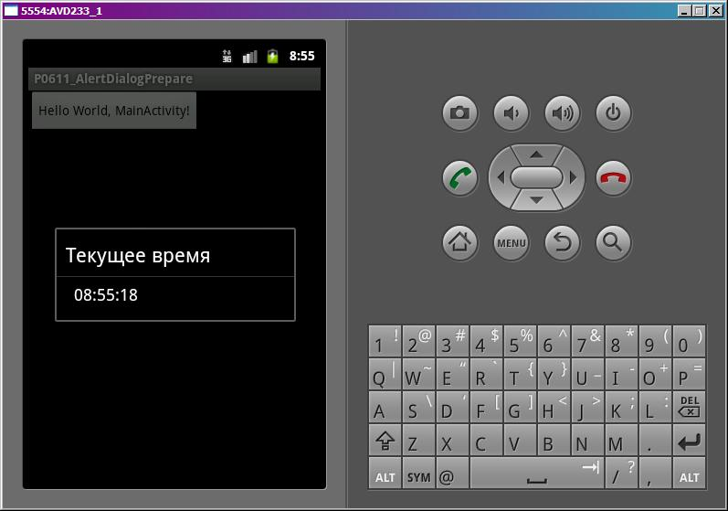

В этом уроке:
- используем метод подготовки диалога
Когда мы создаем диалог в методе onCreateDialog, Activity складывает его в кучу созданных диалогов. И когда надо отобразить, достает его и показывает. Т.е. метод onCreateDialog выполняется только один раз для диалога. И если вам надо перед отображением что-то изменить, надо использовать метод onPrepareDialog. Этот метод вызывается каждый раз перед показом диалога.
Напишем приложение, в нем будет AlertDialog, который будет показывать текущее время.
Создадим проект:
Project name: P0611_AlertDialogPrepare
Build Target: Android 4.0
Application name: AlertDialogPrepare
Package name: ru.startandroid.develop.p0611alertdialogprepare
Create Activity: MainActivity
На экране main.xml только кнопка:
<?xml version="1.0" encoding="utf-8"?>
<LinearLayout
xmlns:android="http://schemas.android.com/apk/res/android"
android:layout_width="fill_parent"
android:layout_height="fill_parent"
android:orientation="vertical">
<Button
android:layout_width="wrap_content"
android:layout_height="wrap_content"
android:text="@string/hello"
android:onClick="onclick">
</Button>
</LinearLayout>MainActivity.java:
package ru.startandroid.develop.p0611alertdialogprepare;
import java.sql.Date;
import java.text.SimpleDateFormat;
import android.app.Activity;
import android.app.AlertDialog;
import android.app.Dialog;
import android.os.Bundle;
import android.util.Log;
import android.view.View;
public class MainActivity extends Activity {
final static String LOG_TAG = "myLogs";
final int DIALOG = 1;
SimpleDateFormat sdf = new SimpleDateFormat("HH:mm:ss");
/** Called when the activity is first created. */
@Override
public void onCreate(Bundle savedInstanceState) {
super.onCreate(savedInstanceState);
setContentView(R.layout.main);
}
public void onclick(View v) {
showDialog(DIALOG);
}
protected Dialog onCreateDialog(int id) {
Log.d(LOG_TAG, "onCreateDialog");
if (id == DIALOG) {
AlertDialog.Builder adb = new AlertDialog.Builder(this);
adb.setTitle("Текущее время");
adb.setMessage(sdf.format(new Date(System.currentTimeMillis())));
return adb.create();
}
return super.onCreateDialog(id);
}
protected void onPrepareDialog(int id, Dialog dialog) {
super.onPrepareDialog(id, dialog);
Log.d(LOG_TAG, "onPrepareDialog");
if (id == DIALOG) {
((AlertDialog)dialog).setMessage(sdf.format(new Date(System.currentTimeMillis())));
}
}
}SimpleDateFormat – это класс, позволяющий выводить дату-время в нужном формате. Задаем ему формат HH:mm:ss и он покажет время в классическом виде часы:минуты:секунды.
В onCreateDialog создаем диалог и устанавливаем заголовок и текст. Кнопки не добавляем, они не нужны. Диалог можно будет закрыть кнопкой Назад.
В onPrepareDialog мы на вход получаем ID вызываемого диалога и сам диалог (Dialog). Мы преобразуем его к AlertDialog и пишем в текст диалога текущее время.
В методах создания и подготовки диалога мы пишем лог, чтобы убедиться, что создание происходит один раз, а подготовка выполняется перед каждым показом.
Все сохраним и запустим приложение. Нажмем кнопку, появился диалог:
Показывает время. Смотрим лог:
onCreateDialog
onPrepareDialog
Выполнились оба метода – создание и подготовка.
Закроем диалог (но не программу) и вызовем снова

Время обновилось, а в логах добавилась запись.
onPrepareDialog
На этот раз Activity просто достало созданный ранее диалог и выполнило метод его подготовки.
Т.е. когда мы показываем диалог первый раз, он проходит через методы создания и подготовки. Далее мы его закрываем, но при этом объект не уничтожается, а Activity сохраняет его у себя. И когда мы снова хотим отобразить диалог, Activity достает его, прогоняет через метод подготовки и показывает.
В этом механизме есть небольшой изъян. Диалог, как и все экраны, состоит из набора View-компонентов. В зависимости от используемых при создании параметров диалог задает видимость этих View. Т.е. если вы при создании не задали, например, Message, то в созданном диалоге будет скрыта View (setVisibility(View.GONE)), которая отвечает за отображение текста Message. И если в методе подготовки диалога вы решите-таки Message указать, то диалог его просто не отобразит, т.к. структура задается при создании.
Я не нашел способ, как можно заставить диалог заново сформировать себя без удаления и создания заново. Если кто знает – пишите, добавлю в урок. А о том, как удалить диалог, чтобы при показе снова вызвался метод onCreateDialog, мы еще поговорим в следующих уроках.